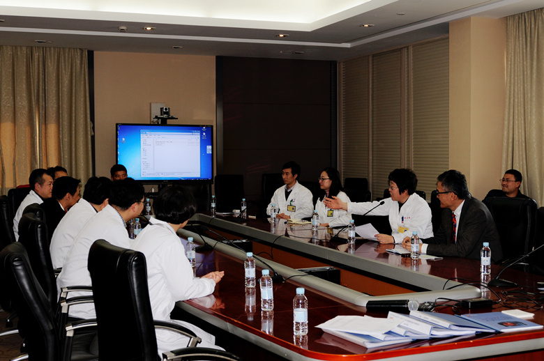

核医学科临床研究项目启动会召开

2月27日，核医学科组织召开了申康系统专科疾病临床五新转化项目《锝-99m标记PD-L1抗体片段在非小细胞肺癌诊断中的临床研究》（项目经费50万元）基础研究进展汇报及临床研究阶段启动会。出席会议的人员有：院科研处处长祝延红，院伦理委员会江一峰主任，院临床实验机构办丁雪鹰主任，核医学科赵晋华主任及临床研究团队，肿瘤中心王红霞主任及临床研究团队，放射性药物专业研发公司和迈生物负责人及科研团队。
PD-1/PD-L1免疫疗法，是除手术、放射治疗、化疗和标靶治疗常用癌症治疗方案之外的新一代疗法，PD-1/PD-L1免疫疗法通过阻断PD-1/PD-L-1信号通路使癌细胞死亡，具有治疗多种类型肿瘤的潜力，有望实质性改善患者的总生存期。目前国外已有几种药物上市，效果显著，而国内尚空白。核医学科联合肿瘤科、放射性药物研发专业公司合作应用放射性核素锝-99m标记PD-L1抗体片段在非小细胞肺癌诊断中的临床研究，开创非小细胞肺癌特异诊断的新方法，并为后续的靶向放射免疫治疗奠定基础，具有良好的临床应用转化前景。
（通讯员/核医学科 汪太松）